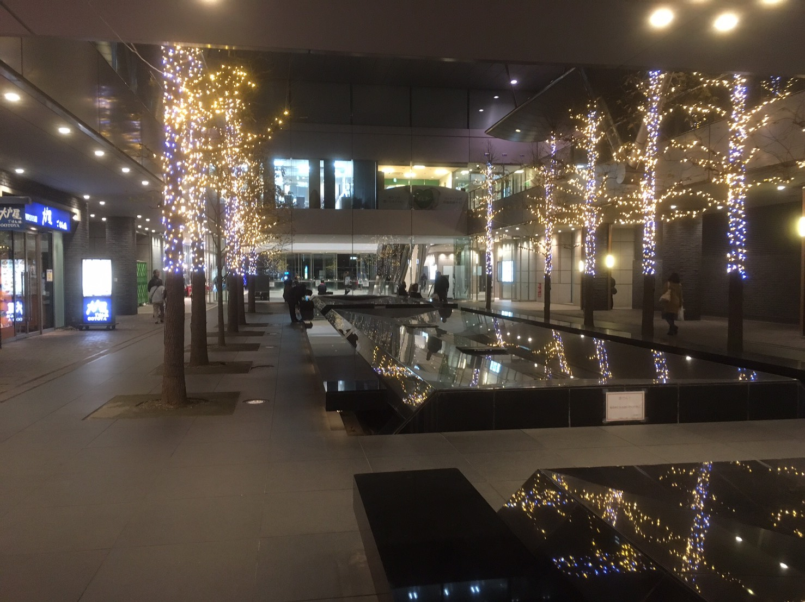
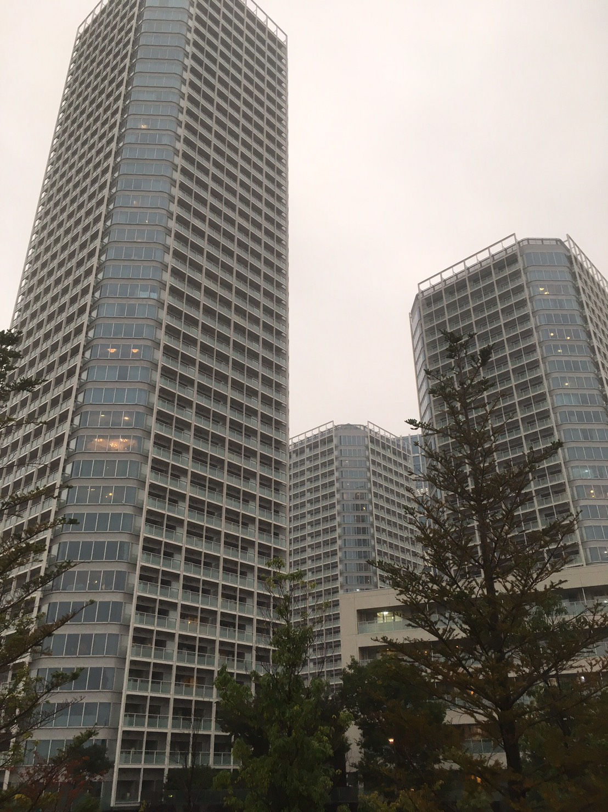
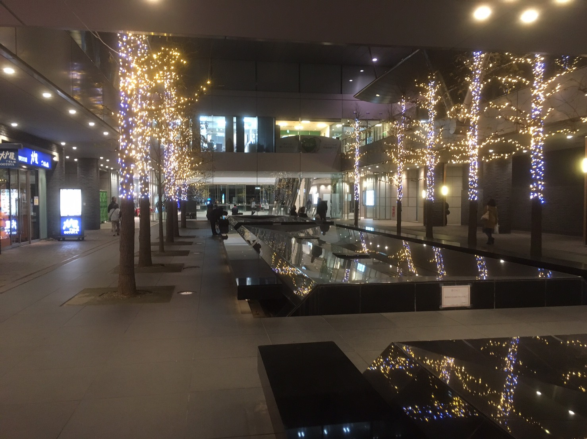
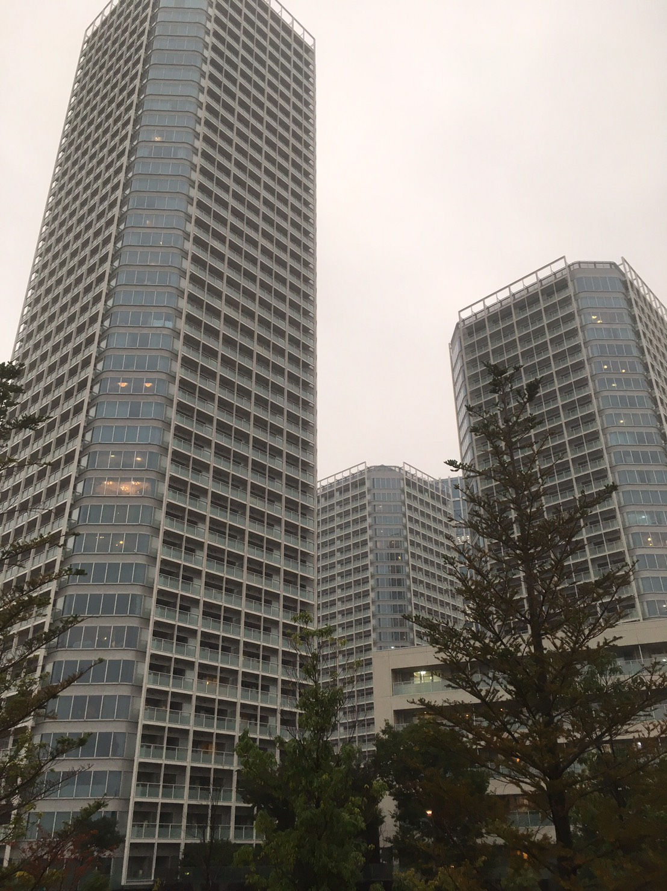

用賀
- 自然
- 街並
- 歴史
用賀のランドマークといえば、28階建ての高層タワー「世田谷ビジネススクエア」
きちんと区画整理されている街なため迷路と言われる世田谷では珍しくドライバーにも優しい街。

二子玉川
- 自然
- 街並
- 歴史
通称ニコタマ。屋上庭園や邸宅の庭園など、のんびり自然散策が楽しめる街。
近年は再開発が進み、世田谷でも新しい文化の発信地になりうる街である。

用賀のランドマークといえば、28階建ての高層タワー「世田谷ビジネススクエア」
きちんと区画整理されている街なため迷路と言われる世田谷では珍しくドライバーにも優しい街。

通称ニコタマ。屋上庭園や邸宅の庭園など、のんびり自然散策が楽しめる街。
近年は再開発が進み、世田谷でも新しい文化の発信地になりうる街である。